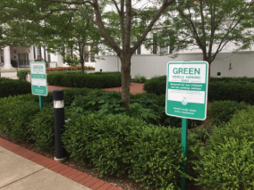
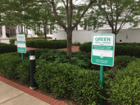
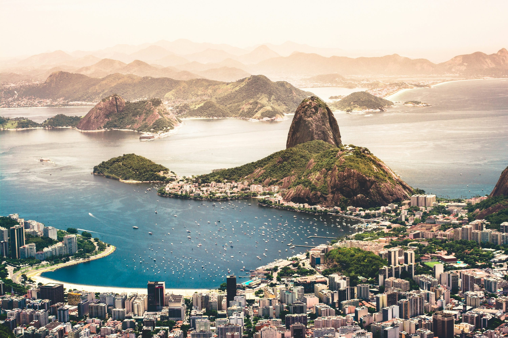

Conheça um pouco mais sobre a localização dos seus amigos
Cada pessoa é um artista livre, chamado a transformar as condições, pensamentos e estruturas que moldam nossas vidas.
A cidade de TripleTen reuniu profissionais de diversos cantos do mundo. Hoje, a Galeria de Arte TripleTen tem o orgulho de apresentar histórias e fotos de algumas das pessoas que dedicam seu tempo e esforço para fazer com que os futuros profissionais de tecnologia desta cidade se sintam em casa. Cada um de nós tem uma história única sobre o lugar de onde viemos. Sinta-se à vontade para adicionar sua própria história e uma obra de arte visual dedicada à sua cidade natal à nossa coleção. Não importa de onde você é, estamos felizes por você ser nosso vizinho.


 



Criccieth, País de Gales
A ruína medieval do Castelo de Cricieth tem vista para a cidade abaixo de uma rocha que se projeta para o mar. Acredita-se que tenha sido construído por Llewelyn, o Grande, no século XIII. Cerca de 900 anos depois, a auto-intitulada *Pérola de Gales nas margens de Snowdonia* tornou-se um destino turístico popular durante os meses de verão.
A uma curta caminhada da estrada do castelo, você pode desfrutar do melhor sorvete do mundo no Cadwalader's, cujo ingrediente secreto, segundo rumores, são algas marinhas de origem local. Outra reivindicação à fama é o fato de que Criccieth ganhou o prêmio *Wales in Bloom* por cinco anos consecutivos por suas espetaculares exibições florais pela cidade. Foi também a casa de David Lloyd George, o único galês a ocupar o cargo de primeiro-ministro do Reino Unido
Berea, EUA

Berea é uma pequena cidade localizada na parte central do Kentucky. A cidade é cercada por belas florestas e campos. É conhecida como a capital do artesanato do estado, e os visitantes encontrarão muitas oportunidades de compras: lojas com bijuterias artesanais, velas, artigos de madeira, galerias, ateliês de vidro e muito mais. A cidade realiza um festival anual que celebra o "pão de colher", um prato local feito com pão de milho e servido com uma colher de pau.
No entanto, provavelmente é mais conhecida pela faculdade local. O Berea College foi fundado em 1855 e foi o primeiro colégio no sul a ser racialmente integrado, bem como o primeiro a ser misto. De forma um tanto singular, não cobra mensalidades - todo aluno recebe uma bolsa de estudos integral.
Muramvya, Burundi

Muramvya é uma das 18 províncias de Burundi. Na era do reino, Muramvya era a capital real e em 2007, por causa de sua paisagem cultural e natural, foi adicionada à Lista Provisória do Patrimônio Mundial da UNESCO. Está localizada no centro de Burundi, entre as capitais políticas e econômicas do país.
O clima é bastante frio à noite, mas durante o dia, você pensaria que está no céu. A 2.665 metros (8.743 pés) acima do nível do mar, o Monte Teza é um dos lugares mais frios da província. Mas essa brisa fresca permite uma das maiores plantações de chá e café do país, que representam a maior parte das exportações do Burundi.
O Parque Nacional de Kibira, uma das maiores reservas de vida selvagem para macacos, se sobrepõe a quatro províncias, incluindo Muramvya. Este Parque Nacional encontra-se no ápice das belas montanhas do Congo-Nile Divide, variando entre 1.550 e 2.660 metros de altitude. Está repleta de uma bela vegetação e fonte para os vários rios e riachos que fornecem água em todo o país.
Rio de Janeiro, Brasil
O Rio de Janeiro, uma das cidades mais icônicas do Brasil, é um verdadeiro cartão-postal conhecido mundialmente por suas paisagens deslumbrantes e sua cultura vibrante. Cercado por montanhas e banhado pelo Atlântico, o Rio abriga algumas das praias mais famosas do mundo, como Copacabana e Ipanema. A cidade também é lar do Cristo Redentor, uma das Sete Maravilhas do Mundo Moderno, que se ergue no topo do Corcovado, oferecendo uma vista panorâmica de tirar o fôlego.
Durante o dia, o clima tropical do Rio proporciona um cenário perfeito para passeios ao ar livre. O Pão de Açúcar, a 396 metros acima do nível do mar, oferece uma das vistas mais impressionantes da cidade, especialmente ao pôr do sol. Já a Floresta da Tijuca, uma das maiores florestas urbanas do mundo, é um refúgio verde repleto de trilhas, cachoeiras e vida selvagem, proporcionando uma conexão única com a natureza dentro da metrópole.
O Rio também é sinônimo de cultura e tradição. O Carnaval carioca, com seus desfiles grandiosos no Sambódromo, atrai milhões de visitantes todos os anos, celebrando a música, a dança e a alegria contagiante do povo brasileiro. A cidade respira arte e história, desde o charme boêmio de Santa Teresa até a modernidade do Museu do Amanhã, na revitalizada região portuária. Seja para relaxar na praia, explorar sua natureza exuberante ou mergulhar na efervescência cultural, o Rio de Janeiro é um destino inesquecível.